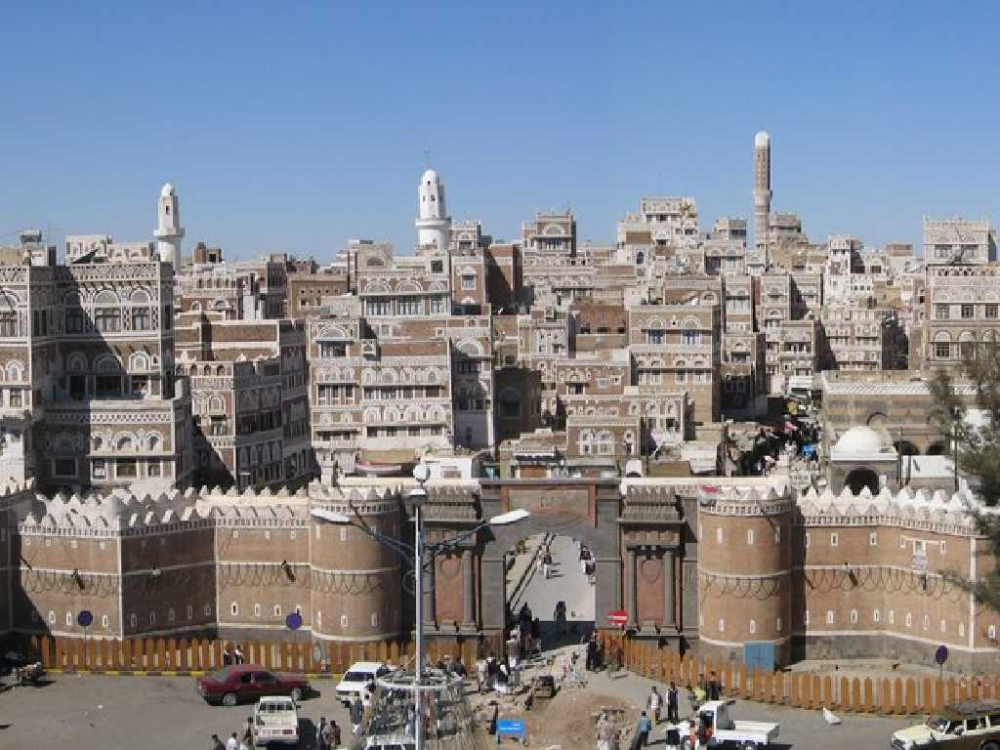
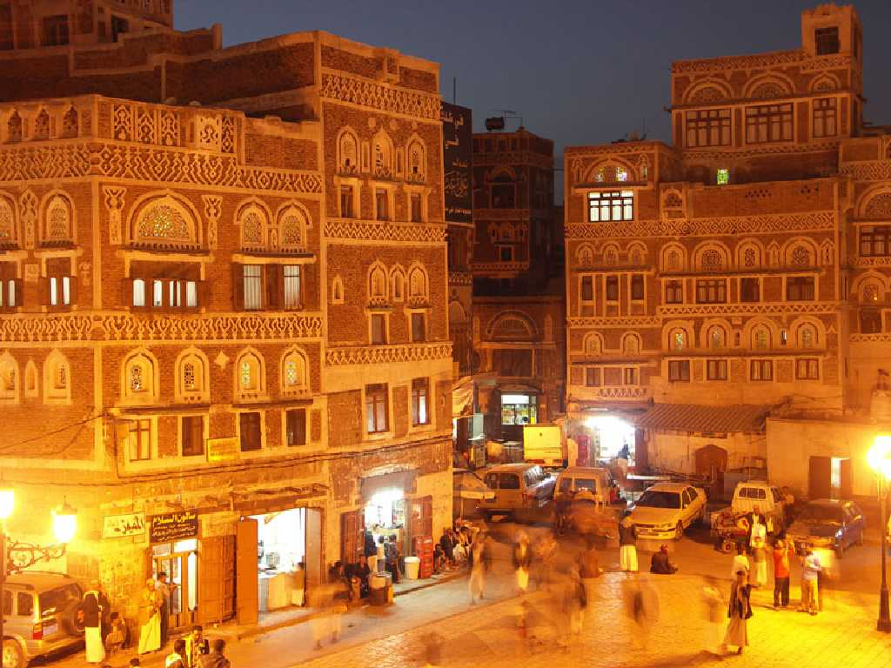
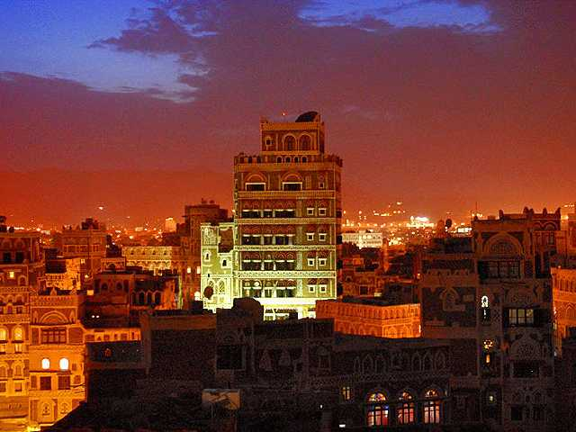
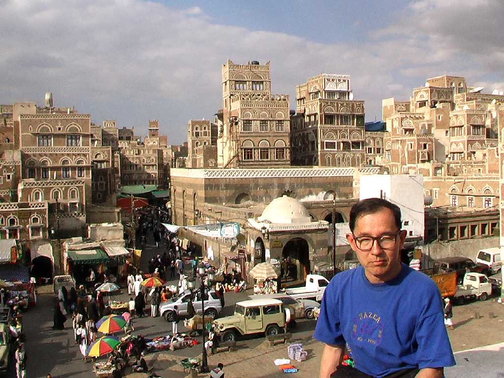

ローマ時代に幸福のアラビアと称された乳香貿易で栄えたイエメンの交易都市 サナア旧市街に入るイエメン門 旧約聖書のノアの方舟のノアの息子セムが最初に住んだ場所として３千年以上人類が定住し続けている世界最古の街の一つと云われている

Night View Old Sana'a
１６世紀に入ると市西部山岳地帯で収穫されたモカコーヒーの集積地として栄え旧市街の９千棟余りの建物の殆どが２００年以上前に造られたもので迷路のような古い街並みと低層部石造り高層部レンガ造りの高層建築群は非常に美しく旧市街に泊まった８階建てのホテルも窓と内装が漆喰に彩られ美しかった

Burj Al Salam Hotel

January 28 2009 Sana'a